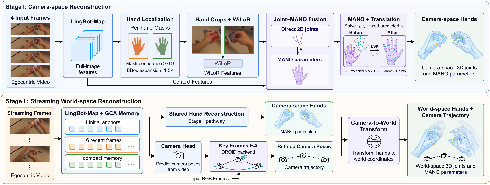
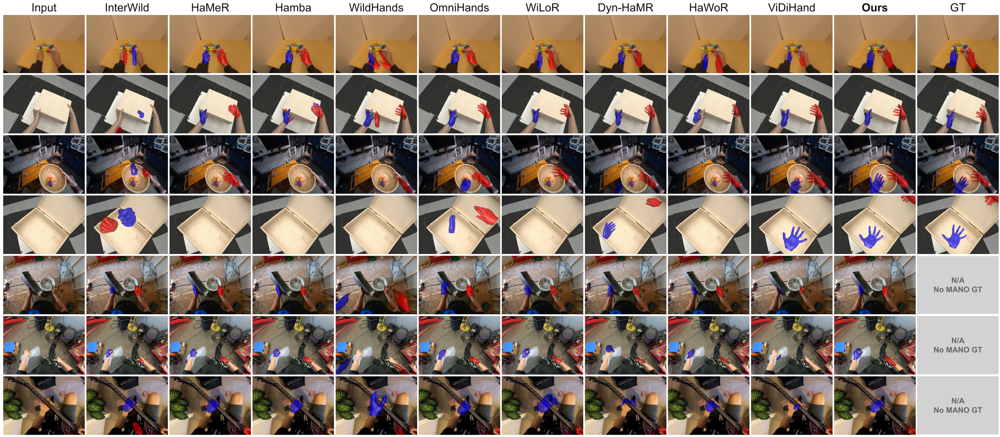
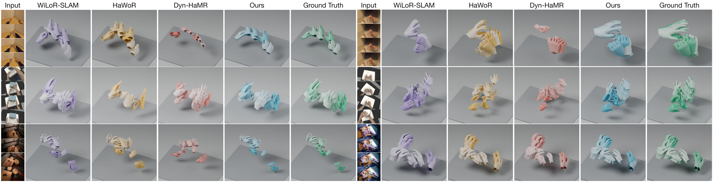

STREAMING · WORLD-SPACE · EGOCENTRIC
InfiniHand: Streaming World-Space
Hand Motion Estimation
from Egocentric Video
TL;DR A unified streaming model turns egocentric video into accurate hand motion in world coordinates, with large-scale egocentric pretraining and fast inference.
See the hands. Follow the motion.
Seven scenes. Four methods. Drag the three dividers to compare.
ARCTIC · Box
Loading scene…Loading 3D mesh…
Left: world-space hand motion—drag to rotate, scroll to zoom, and switch between Ours and HaWoR. Right: synchronized camera-space results—drag the three dividers to compare Ours, ViDiHand, HaWoR, and WiLoR. Use the shared timeline to play or scrub both views.
What do we need for an
egocentric video annotation pipeline?
- 01
More accurate
reconstructionA streaming 3D foundation model supplies geometric priors that help locate hands in space. Combining this context with hand-centered appearance supports detailed reconstruction even under occlusion.
Geometry-aware hand motion - 02
More diverse
egocentric dataWe curate approximately 5,000 hours of public egocentric video and clean the annotations into a large-scale training corpus. Two-stage training builds accurate hand geometry and improves generalization to in-the-wild interactions.
5,000 hours · two-stage training - 03
Faster
inferenceOne streaming framework jointly estimates hand locations, hand motion, and camera trajectories. Reusing features and overlapping backbone and head execution delivers 11.19 FPS—more than twice HaWoR’s throughput.
11.19 FPS · 2.04× HaWoR
From local articulation to world-space motion.

Detailed hands, across diverse interactions.


Citation
@misc{ren2026infinihand,
title = {InfiniHand: Streaming World-Space Hand Motion Estimation from Egocentric Video},
author = {Ren, Kerui and Song, Kaiwen and Zhao, Weiguang and Wang, Yuxi and
Liu, Yufei and Dai, Bo and Guo, Haoyu and Shen, Chunhua and
Yu, Mulin and Lu, Tao and Dong, Junting},
year = {2026},
url = {https://infinihand.github.io/}
}